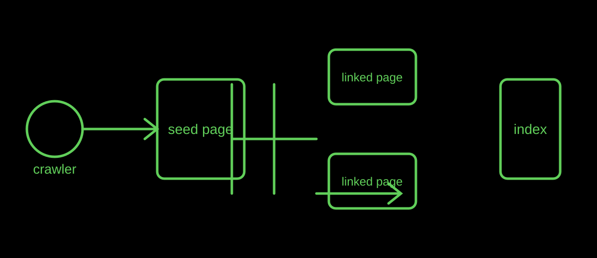

Crawler basics
What Is a Web Crawler? How Automated Visitors Find Pages
A web crawler is automated software that fetches web resources. Search engines can use crawlers to traverse links and discover material for later processing.
Published · By the bug breeder

The short answer
At its simplest, a crawler requests a page, reads links or other discovery signals, and schedules more requests. Search engines use automated clients to traverse links for indexing; that does not mean every requested URL will appear in results.
Why links still matter
Ordinary HTML links give people and automated clients a path between pages. That is why the Insectary archive uses direct links to every published article instead of hiding the list behind a script.
A sitemap can complement links by offering another URL list, but it is a hint rather than a promise that a crawler will fetch or index every page.
What a request cannot tell us
A request can show that a client contacted a server. It does not establish a visitor's motive, personhood, or final treatment of the page. The Insectary makes that limited contact visible without treating it as a complete biography.
Limits
Crawling, indexing, ranking, and answering are distinct processes. This simplified diagram leaves out scheduling, rendering, caching, canonicalisation, and many other implementation details.